Le rôle de l'apiculteur
La ruche
- 10 cadres (Dadant)
- Cadres de réserves
- Cadres de ponte
- Partition
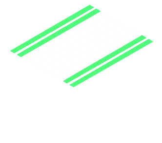
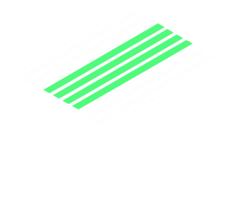
Objectifs
- Maintenir le niveau des réserves
- Surveiller la santé de la reine et de la ponte
- Réagir en cas de crise
Vérifier le niveau des réserves
Miel et nectar
- Les réserves sont en haut des cadres
- Cellule operculée : miel
- Cellule non operculée : nectar


Vérifier le niveau des réserves
Miel et nectar
- Les réserves sont en haut des cadres
- Cellule operculée : miel
- Cellule non operculée : nectar
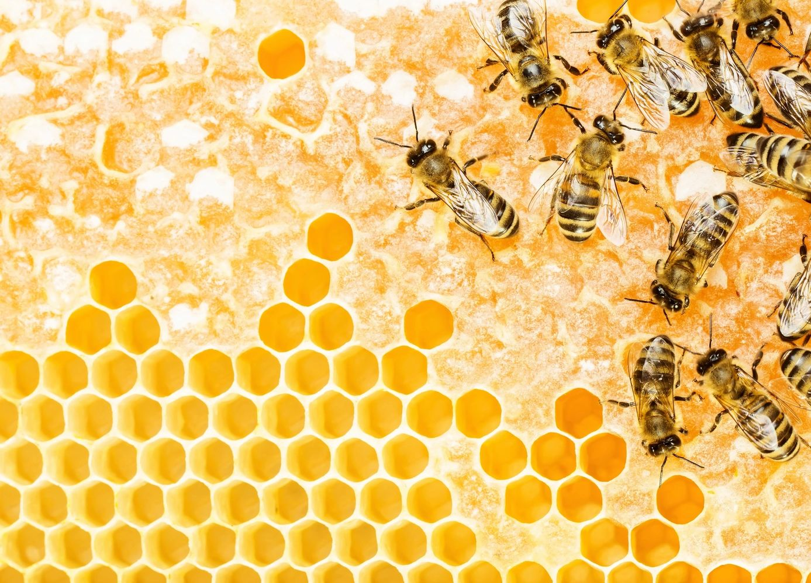
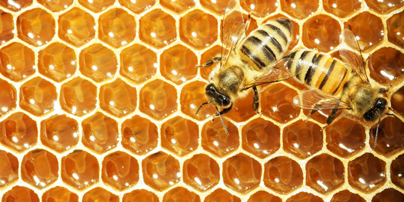
Vérifier le niveau des réserves
Pollen
- Les réserves sont en haut des cadres
- Le pollen est stocké sous le miel
- Cellules colorées non operculées


Vérifier le niveau des réserves
Pollen
- Les réserves sont en haut des cadres
- Le pollen est stocké sous le miel
- Cellules colorées non operculées

Vérifier l'état de la ponte
- Le couvain est au centre du cadre
- Les larves et les oeufs sont en périphérie du couvain operculé
- La reine peut se trouver sur ces cadres

 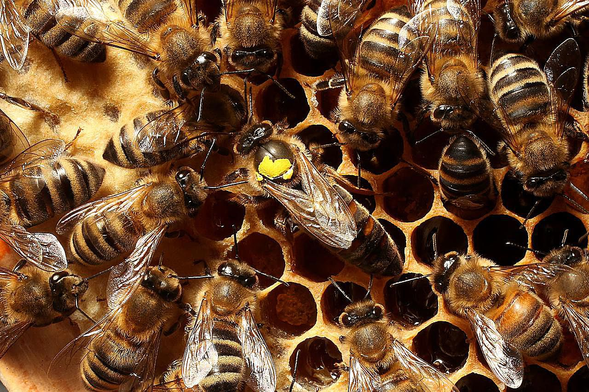
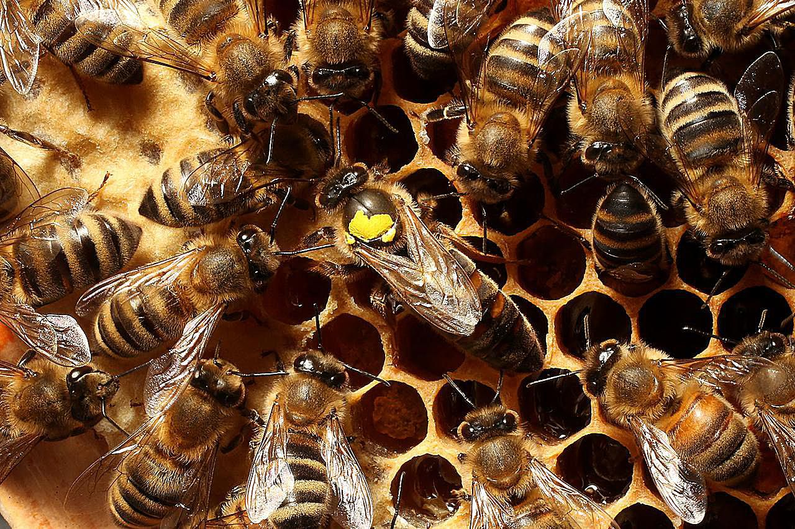
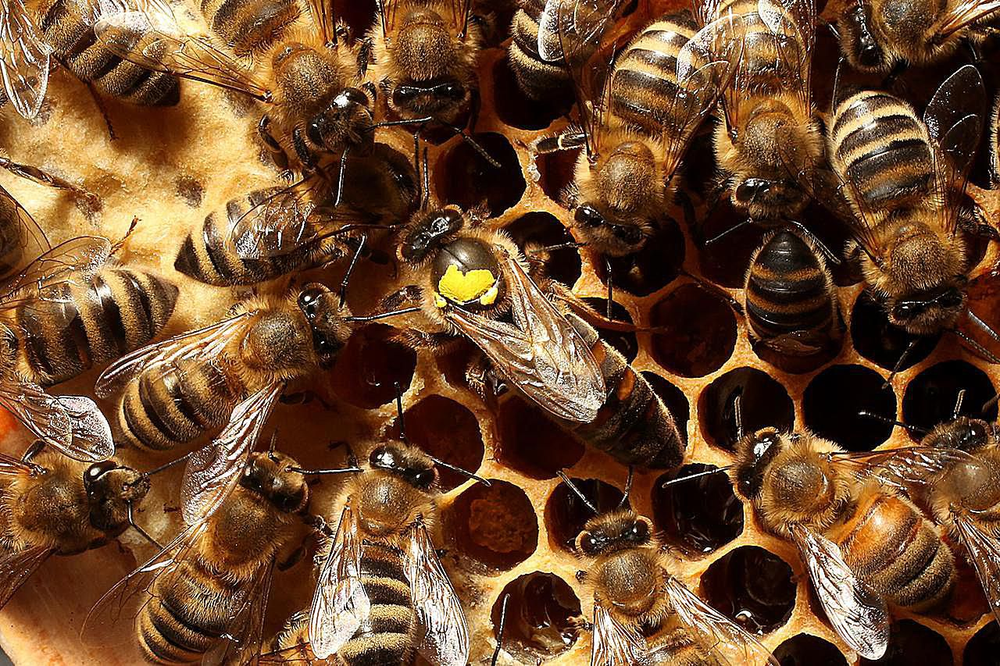
Prévenir les crises
Le couvain mosaïque
- Il y a des trous dans le couvain
- Indique que la reine est trop vieille ou malade
- Solution : éliminer la reine
Prévenir les crises
L'essaimage
- La colonie est trop à l'étroit et crée une nouvelle reine
- Perte de la moitié de la colonie
- Vérifier qu'il n'y a pas de cellules royales
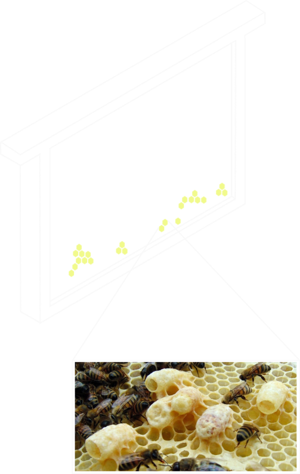
Prévenir les crises
La ruche bourdonneuse
- Le couvain mâle est en bas des cadres
- Il est plus gros que le couvain femelle
- Trop de couvain mâle peut indiquer un problème (ruche orpheline)

Bilan :
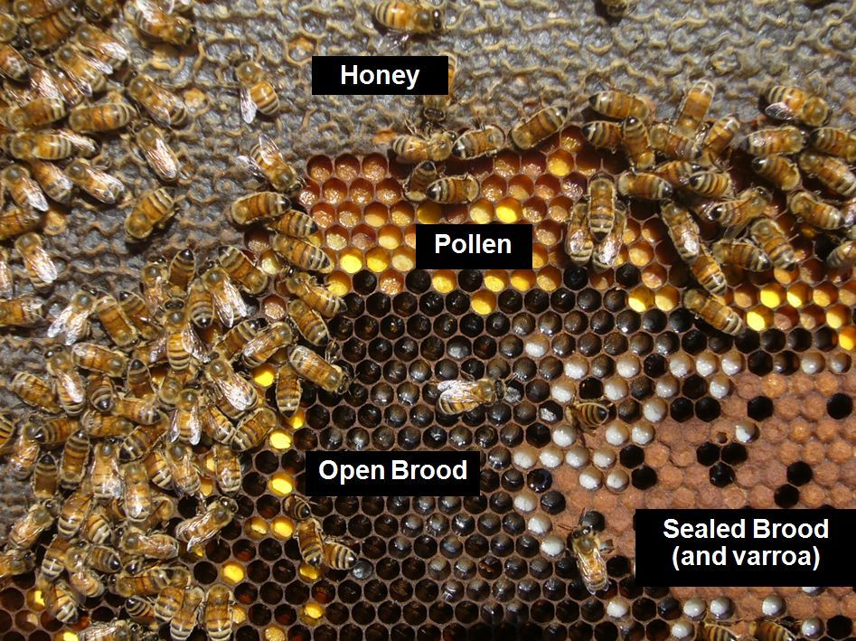 En pratique, c'est rarement aussi clair..Mise en pratique
Remettre la ruche dans l'ordre
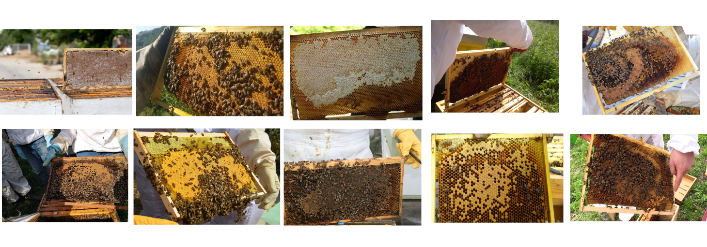Une solution possible
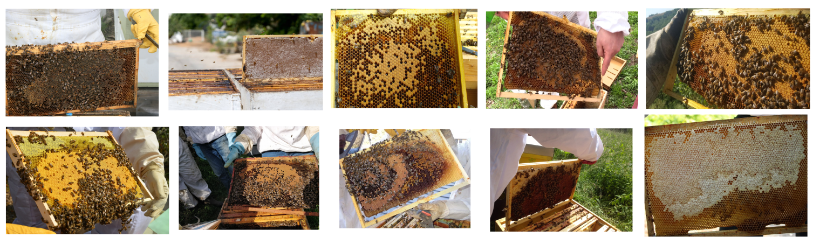
Ajouter des cadres dans la ruche
- Les cadres ajoutés sont vides
- Le but est de laisser les abeilles choisir si elles ont besoin de place pour le couvain ou les réserves
- On peut déplacer tous les cadres mais jamais les intervertir
Contenu de la ruche
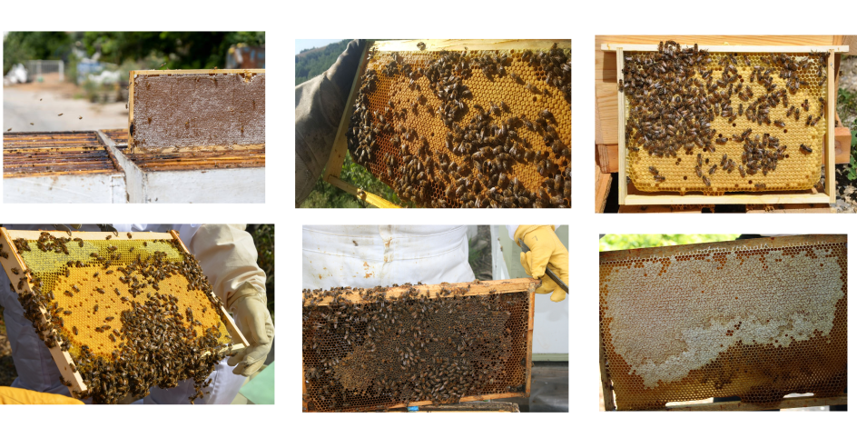Solution
Les cadres sont ajoutés en positions 2 et 6Nommer les éléments
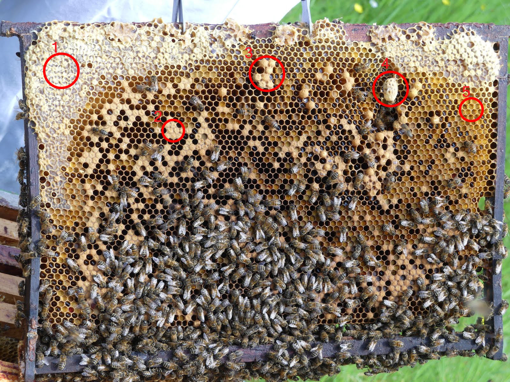Solution
- Miel operculé
- Couvain femelle
- Couvain mâle
- Cellule royale ? (peut-être une cellule de mélange)
- Pollen
Les crises
Y-a t'il des problèmes avec les cadres suivants ?